Four files, two shapes. logo-* is the full
shape, glyph-* is simplified for small
sizes and favicons. The suffix names the background the file is
for, not the colour of its ink.

Sovereign cloud for everyone
Body text in Inter. Note the tail on lowercase l: ll11
cluster-prod-01 · 10.42.0.0/16 · sha256:7f3a9c · 4m32s
Lowercase letters, digits and hyphens.
| Name | Address | Status |
|---|---|---|
| node-1 | 10.42.0.11 | Ready |
| node-2 | 10.42.0.12 | Draining |
| node-3 | 10.42.0.13 | Unreachable |
Couldn't reach node-3 - last seen 4 m ago.